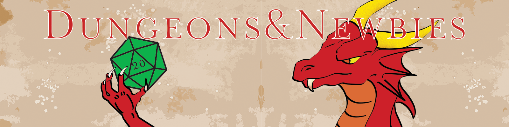

Dungeons and Newbies
What is Dungeons and Newbies?
Why I Started Dungeons&Newbies
I started the Dungeons and Newbies Podcast because I love Dungeons and Dragons, and I know first hand how difficult it can be to get into this fantastic game. I know this because I had to teach myself how to play; I purchased the Fifth Edition D&D Starter Set, and I had to teach myself with the help of a friend who, like me, had never played D&D before. Together we worked together reading through the rulebook that came with the Starter Set and taught ourselves the game. I don't want anyone else to have to be in that situation, so I want to use this podcast to inform people how to play and run the game. To start off, we need to know the lingo that goes with Dungeons and Dragons, which is why I devoted the first episode of this podcast to the different words you will hear and what you need for a game of D&D. Since then, I have spent episodes talking about some tips for Dungeon Masters, how to be a good player, and many more topics. I started this podcast to help people play the game and to share my ideas about the game I love so dearly.
What is Dungeons&Newbies
Dungeons and Newbies is a podcast aimed at teaching people how to play Dungeons and Dragons, and to help them do so. Dungeons and Dragons is an immensely complicated game if you are brand new to it; however, I would like to make it easier for a newcomer to dip their toes in this fantastic hobby. In this podcast I give my opinions on different topics in Dungeons and Dragons, I discuss how I like to approach a problem, and how I run and play the game. My goal with this podcast is to ensure that even someone who has only heard of the game can approach a group feeling confident that they will be able to play the game and have fun.
About Me
I am Jack, I run the Dungeons and Newbies Podcast. I currently run one game of Dungeons and Dragons and play in a different group. I have more experience as a Dungeon Master; however, I do love to play I think it is a unique way to think about the world. As a Dungeon Master, I am not perfect; I have many things that I would like to work on when I'm running the game, but my players have fun, so that's great. I have played D&D since October of 2016, and I have only ever run 5th edition. I have read through a few things from previous editions and implemented them into my 5th edition games. I love to world build and create towns that are more than meets the eye. I am currently a freshman in college and am looking to become a voice actor. If you have any questions about my podcast or about me (please no personal information) send an email to Jack@DungeonsAndNewbies.com. Thank you for your interest in the Dungeons and Newbies Podcast!
Our Twitter Feed
Tweets by DungeonsNewbiesOur Discord Feed
Listen to Dungeons and Newbies
In this first episode of Dungeons & Newbies, we are going to be talking about how to get started in the fantastic hobby that is Dungeons and Dragons. We will be talking about the dice used, things you may want to bring, whether or not you should know the rules, some phrases that you will definitely hear, and the time commitment that comes with D&D. You can get the pdf of the basic rules at dnd.wizards.com/articles/features/basicrules.
In this episode of Dungeons & Newbies, we are going to be talking about storytelling in the fantastic hobby that is Dungeons and Dragons. We will be talking about how you can use storytelling in your game, things you may want to keep in mind, and how to add more storytelling as a DM.
In this episode of Dungeons & Newbies, we are going to be talking about how to be a player in the fantastic hobby that is Dungeons and Dragons. We will be talking about how you can be a great player in D&D, along with some other tips.
In this episode of Dungeons & Newbies, we are going to be talking about how to be a DM in the fantastic hobby that is Dungeons and Dragons. We will be talking about how to choose your words, how to get the players to be more creative, the jobs of a DM, and more! You can find DMsGuild at DMsGuild.com.
In this episode of Dungeons & Newbies, we are going to be talking about some amazing tools in the DM's toolbox in the fantastic hobby that is Dungeons and Dragons. We will be talking about the tools I use and the different ways you can use them!
In this episode of Dungeons & Newbies, we are going to be talking about why I play, and why you should play the fantastic game that is Dungeons and Dragons. We will be talking about just a few of the different reasons why I play and some reasons you should give D&D a try too!
In this episode of Dungeons & Newbies, we are going to be talking about some of the questions that new DMs may have about the fantastic game that is Dungeons and Dragons. We will be talking about just a few of the questions new Dungeon Masters may have and what my answer to them is.
In this episode of Dungeons & Newbies, we are going to be talking about technology at the gaming table. We will be talking about when it is appropriate to be using technology at the gaming table and how to be respectful of the other people when using it.
Music:
Hero Down Kevin MacLeod (incompetech.com)
Licensed under Creative Commons: By Attribution 3.0 License
http://creativecommons.org/licenses/by/3.0/
In this episode of Dungeons & Newbies, we are going to be talking about technology at the gaming table. We will be talking about when it is appropriate to be using technology at the gaming table and how to be respectful of the other people when using it.
Music:
Hero Down Kevin MacLeod (incompetech.com)
Licensed under Creative Commons: By Attribution 3.0 License
http://creativecommons.org/licenses/by/3.0/
In this episode of Dungeons & Newbies, we are going to be talking about music at the gaming table. We will be talking about when to use music, when, and why you should.
Music:
Hero Down Kevin MacLeod (incompetech.com)
Licensed under Creative Commons: By Attribution 3.0 License
http://creativecommons.org/licenses/by/3.0/
In this episode of Dungeons & Newbies, we are going to be exploring the default fifth edition character sheet for Dungeons and Dragons. This is part 1 of 3; part 1 examines the first page of the character sheet.
Music:
Hero Down Kevin MacLeod (incompetech.com)
Licensed under Creative Commons: By Attribution 3.0 License
http://creativecommons.org/licenses/by/3.0/
In this episode of Dungeons & Newbies, we are going to be talking about the process that we go through when creating characters in Dungeons and Dragons
Music:
Hero Down Kevin MacLeod (incompetech.com)
Licensed under Creative Commons: By Attribution 3.0 License
http://creativecommons.org/licenses/by/3.0/
Dungeons and Newbies Schedule
Contact Dungeons and Newbies
Contact Jack:
Contact L:
Contact us:
Have a Question: